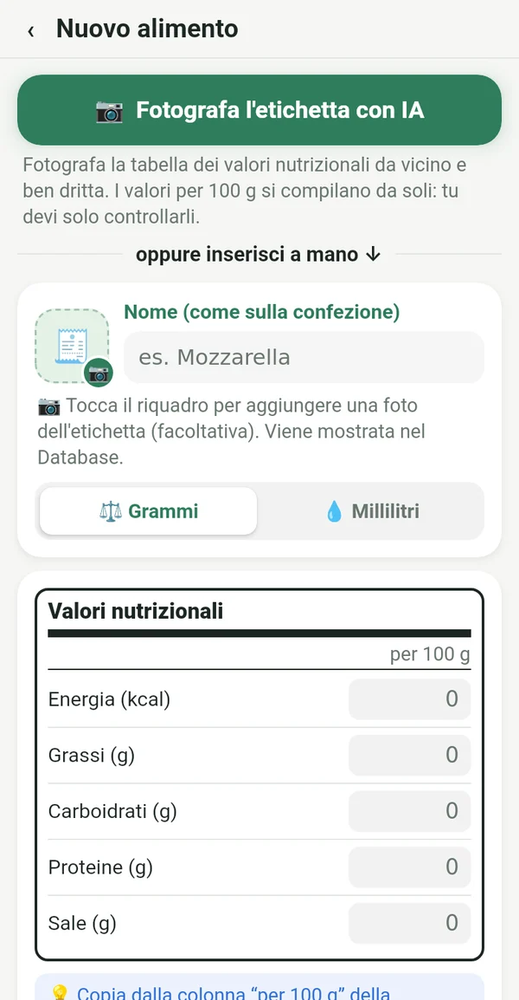
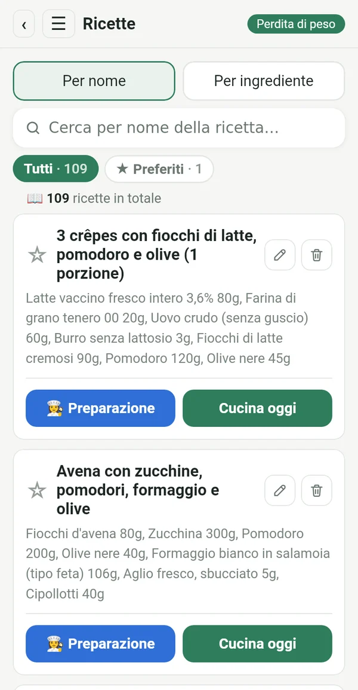
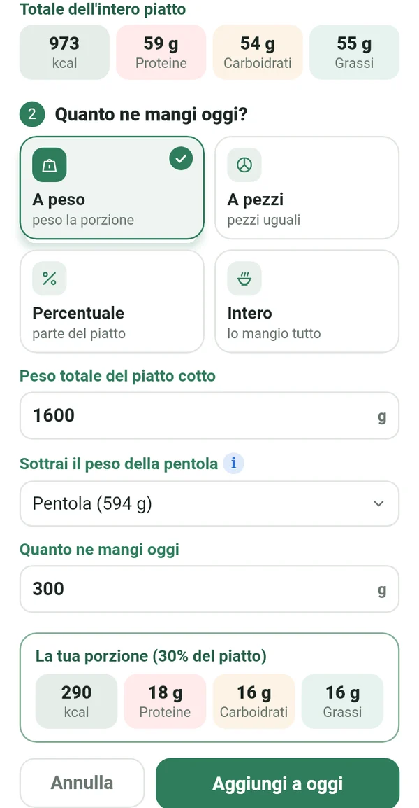
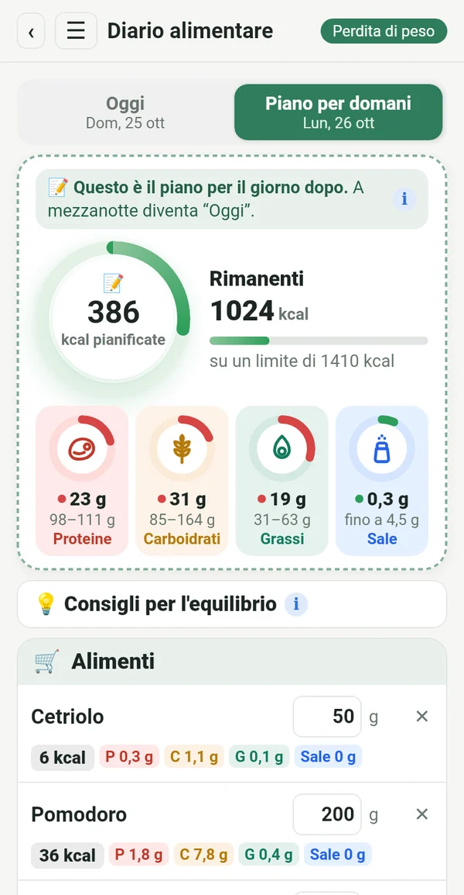
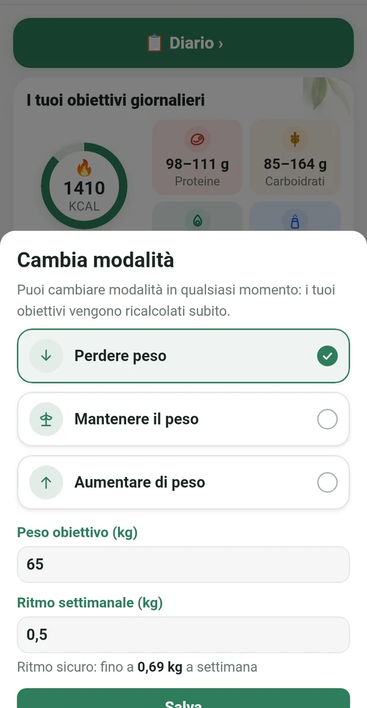
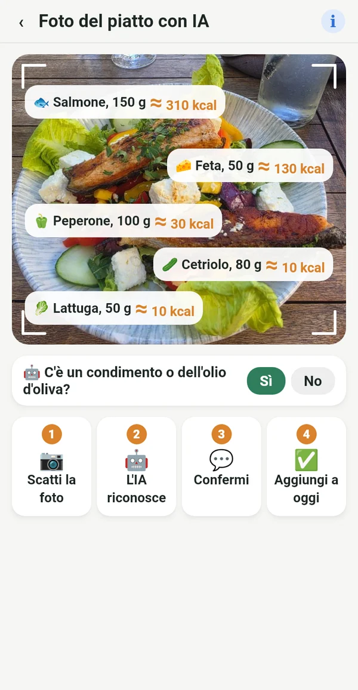

Tutto quello che ti serve, niente di superfluo

Dall'etichetta, non da database altrui
Ricopi i valori per 100 g dalla confezione o fotografi semplicemente l'etichetta. I numeri corrispondono a quello che mangi davvero.
📷 Una foto dell'etichetta con IA compila i campi al posto tuo
Il tuo ricettario digitale
Le ricette del quaderno della nonna, dei libri di cucina sullo scaffale e dei tuoi gruppi preferiti, tutte in un unico posto. Le inserisci una volta e le usi per sempre.

La porzione esatta da tutta la pentola
Pesi il piatto pronto insieme alla pentola. Macrolia toglie il peso della pentola e calcola esattamente quanto hai mangiato.

Pianifichi, fai la spesa, mangi
Già oggi inserisci cosa mangerai domani. Compri solo quello che serve e a mezzanotte il piano diventa la tua giornata.

Perdere, mantenere o aumentare il peso
Quando raggiungi l'obiettivo, passi a «Mantenere il peso». Se la vita cambia, cambi semplicemente modalità. Il limite giornaliero segue l'equazione di Mifflin-St Jeor e le linee guida cliniche, con un ritmo sicuro.

Anche fuori sai cosa mangi
Fotografi il piatto e l'IA riconosce cosa c'è. Il valore è approssimativo e segnato con ≈. Meglio approssimativo che niente.
Calorie dal movimento
Con Health Connect, dal telefono, da un orologio o da un'app di fitness. Scegli tu quanto aggiungere al limite.
Peso, grafico, report
Grafico del peso, foto prima e dopo solo per te e report in PDF ed Excel.
Consigli di equilibrio
Brevi suggerimenti quando proteine o grassi sono fuori obiettivo. Aiuta, non comanda.
Per tutte quelle che vogliono restare in carreggiata
Lo yo-yo non viene dalla dieta. Arriva quando smetti.
Dopo il bambino, ritrovi la tua routine.
L'età non è un motivo per arrendersi.
Anche al ristorante sai cosa ordinare.
Chi segue il piano alla lettera ottiene un risultato preciso.
I tuoi dati sono solo tuoi
Tutto resta sul tuo telefono. Niente registrazione, pubblicità o tracciamento. La foto per l'analisi IA viene inviata solo per il calcolo e non viene conservata.
Abbonamento
Abbonamento mensile o annuale, entrambi con 7 giorni gratis. Annulli quando vuoi su Google Play.
In 14 lingue, con tema chiaro e scuro.
Domande
Quando esce l'app?
Stiamo preparando il lancio su Google Play. Scrivici e ti avviseremo quando sarà pronta.
C'è una versione per iPhone?
Per ora solo Android. Una versione per iPhone è prevista in seguito.
Perché non c'è lo scanner di codici a barre?
I database dei codici a barre sono compilati dagli utenti e spesso sono sbagliati o vecchi. In Macrolia ogni valore viene dall'etichetta, perciò i numeri sono esatti.
Quante foto con IA posso fare?
Fino a 100 foto al mese, tra etichette e piatti.